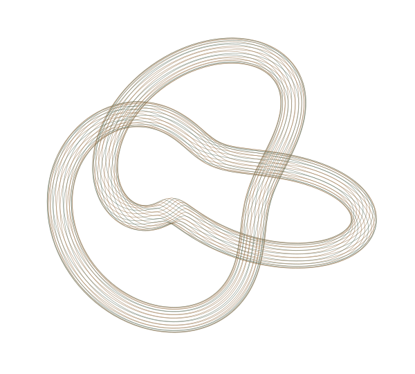

01 /
RESEARCH DIRECTION
Learning, with structure.
Better interactions. More useful experience. Agents that learn beyond the demonstration.
I’m Hans. I work across reinforcement learning, embodied intelligence, and the systems that make them possible.
From mathematical structure to something that runs.

01 / SELECTED DIRECTIONS
Different layers.
The same curiosity.
Better interactions. More useful experience. Agents that learn beyond the demonstration.
Explicit state. Composable behavior. A useful boundary between intention and execution.
The shape of a computation matters. So does the machine that carries it.
02 / THE PLAYGROUND
Small experiments.
Real mechanisms.
Edit an expression. Inspect its representation. Run the machine code.
// Run the compiler to inspect the result.Pure, wrapping i32 arithmetic. No eval. An actual Wasm binary, generated and executed in your browser. Ctrl / ⌘ + Enter to run.
Compose two generators. Explore all six symmetries.
a³ = e b² = e ab ≠ ba
Right multiplication: state ← state ∘ generator. The rightmost permutation acts first. Table and relations are computed from permutations.
A memory-access trace, one cache line at a time.
Educational model, not a hardware benchmark. Cold cache, direct mapping, no prefetching; line size is measured in matrix elements.
Round-robin scheduling, with the policy made visible.
Single CPU; integer ticks; no I/O or context-switch cost. New arrivals enter the ready queue before the running job is requeued.
03 / FIELD NOTES
Not answers to everything.
Better questions, perhaps.
A six-element group, and a surprisingly useful habit of thought.
A shorter program is interesting only if its meaning survives.
The same arithmetic can take very different paths through memory.
I’m interested in the space between a clean abstraction and a working system: how an agent learns, how a program represents intent, and how a machine turns that intent into motion. I like following a question through the layers rather than stopping at their boundaries.
Make the mechanism precise. Make the interface disappear.
LET’S COMPARE NOTES
For research, systems, and things worth understanding deeply.